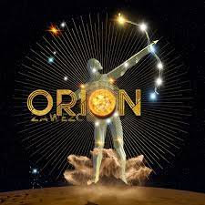

🌟 Zawezo: Música que Inspira y Refleja el Mundo 🎵
🎤 Introducción:
El mundo de la música es un universo diverso, lleno de artistas talentosos que traen su propia visión y perspectiva. Entre estos artistas se encuentra Zawezo, una figura única en el mundo de la música contemporánea. Originario de Nueva York 🗽, Zawezo ha ganado reconocimiento por su enfoque innovador y profundamente reflexivo de la música. Su música desafía los límites y sus letras provocan la reflexión, lo que lo convierte en un artista extraordinario. En este artículo, exploraremos la vida y obra de Zawezo, así como el impacto que ha tenido en el mundo de la música. 🎶
📜 La Filosofía de Zawezo:
Lo que distingue a Zawezo es su filosofía única. Sus canciones son mucho más que simples composiciones; son odas a la mente y el espíritu. Cada canción es un viaje emocional y mental que nos invita a explorar temas que van desde la espiritualidad y la autoconciencia hasta la política y la historia. En un mundo donde la música a menudo sigue fórmulas predecibles, Zawezo se destaca como un artista que no tiene miedo de desafiar las convenciones. 🤯
🎶 Explorando su Música:
Las letras de Zawezo son como poesía musical. Su enfoque en la autoconciencia y la búsqueda de la verdad se refleja en cada una de sus canciones. En "HZ," nos invita a sintonizar la frecuencia adecuada para vivir una vida plena y evitar la influencia negativa del mundo que nos rodea. Las letras de Zawezo abordan cuestiones sociales y espirituales, y son una invitación constante a la autorreflexión. ✨
🔮 En "Actualizacion," Zawezo critica el sistema educativo tradicional y desafía las creencias convencionales. Alienta a los oyentes a buscar fuentes de información alternativas y a cuestionar el status quo. La canción es un llamado apasionado a la búsqueda de conocimiento y verdad en un mundo donde las respuestas no siempre son evidentes. 📚
🤠 Con "The West," Zawezo aborda los aspectos oscuros de la historia de Estados Unidos, especialmente el trato a los nativos americanos durante la expansión hacia el oeste. La canción es un recordatorio poderoso de que no debemos olvidar ni ignorar la historia y sus lecciones. 🌄
🤔 En "Dichos," Zawezo nos invita a reflexionar sobre la sabiduría y el aprendizaje que se pueden obtener de nuestro patrimonio cultural. La canción enfatiza la importancia de comprender nuestras influencias ancestrales y el valor de los dichos y frases tradicionales que a menudo reflejan las experiencias y creencias de nuestros antepasados. 🧐
🌍 "Frágiles" es una canción que aborda el concepto del entitlement, la importancia del trabajo duro y la responsabilidad personal. La canción insta a los oyentes a ser conscientes de sus acciones y sus consecuencias en un mundo en constante cambio. Las letras son apasionadas y desafiantes, lo que la convierte en una canción esencial para quienes buscan inspiración y motivación. 💪
🌌 "Occulto" incorpora elementos conspirativos, ocultismo y numerología. Las letras animan a los oyentes a buscar conocimiento y evitar ser influenciados por aquellos en el poder. La canción es una invitación a cuestionar el status quo y explorar verdades ocultas. 🕵️♂️
🌠 En "Sky People," Zawezo invita a los oyentes a reflexionar sobre el universo y su lugar en él. Las letras exploran temas de espiritualidad, materialismo y el poder de la mente, instando a la audiencia a cuestionar el mundo que les rodea y buscar un significado más profundo. La canción es una invitación a mirar más allá de la superficie de las cosas. 🌌
🌞 "Ego" es una canción poderosa y provocadora que profundiza en el concepto del ego y sus efectos perjudiciales en nuestras vidas. Las letras enfatizan la importancia de la autoconciencia y la necesidad de superar el ego para alcanzar nuestro máximo potencial. La canción es un llamado a la reflexión y al autodescubrimiento. 🧘♂️
🧐 "Da Vinci" es una obra de arte compleja que profundiza en los misterios y simbolismos de la obra de Leonardo da Vinci. La canción aborda la importancia de que el arte y la ciencia trabajen juntos, y la idea de que la clave para desbloquear el conocimiento oculto radica en nuestra capacidad de ver más allá de lo que es inmediatamente visible. Las letras exploran las obras maestras de Da Vinci y los mensajes ocultos que se dice que contienen. 🎨
💔 "Perdón" es una canción poderosa y provocadora que explora el concepto del perdón frente a la injusticia y la venganza. Las letras profundizan en la dificultad de perdonar a aquellos que no hacen el bien, y la importancia de tener el coraje y la paciencia para evaluar y expresar el perdón. La canción es un recordatorio del poder de la compasión y la importancia de dejar ir el resentimiento. 🤝
🌌 "Orion" es una pieza contemplativa que explora el futuro de la humanidad en el espacio. Las letras describen un viaje en busca de un nuevo planeta para habitar, mientras el sol se acerca a su fin. La canción habla sobre el sacrificio, la supervivencia y la necesidad de expandirse y colonizar nuevos territorios. Es un llamado a la exploración y la superación de los límites de la Tierra. 🚀
🌟 "Sabios" reflexiona sobre la sabiduría y el conocimiento y sugiere que nacemos sabios pero a menudo nos desviamos del camino de la verdad debido a la manipulación y las malas intenciones. La canción es una invitación a buscar la sabiduría dentro de nosotros y explorar el significado más profundo de la vida. 🤓
👁️ "Coincidencia" aborda temas de poder, influencia y verdades ocultas. Las letras sugieren que las cosas positivas pueden ser ocultadas o influenciadas negativamente, y que la mente tiene un poder inmenso. La canción desafía a los oyentes a cuestionar las historias que se les cuentan y a buscar la verdad más allá de las apariencias. 🧐
🌌 "Transcendencia" es una canción reflexiva e introspectiva que anima a los oyentes a explorar su espiritualidad y cuestionar el mundo que les rodea. Las letras son profundas y poéticas, y sugieren que el conocimiento y la comprensión provienen de la búsqueda y el cuestionamiento. La canción es un recordatorio de la importancia de ir más allá de la superficie de las cosas. 🧘♂️
🌞 "Ser" es una pieza poderosa y reflexiva que aborda temas de verdad, poder y la condición humana. Las letras animan a los oyentes a ser conscientes de sus acciones y a luchar por lo que creen. La canción es un llamado a la responsabilidad personal y a dejar un legado duradero en el mundo. 🤝
🌟 "La Correa" es una canción poderosa que desafía la dependencia de la tecnología y la falta de conexión con el mundo natural. Las letras critican la religión y la competencia, alentando a los oyentes a buscar la colaboración y el liderazgo en lugar de la dominación. La canción es un llamado a la unidad y la espiritualidad. 🌎
Zawezo link youtubedeja tu comentario Aqui!!!👈️😉️